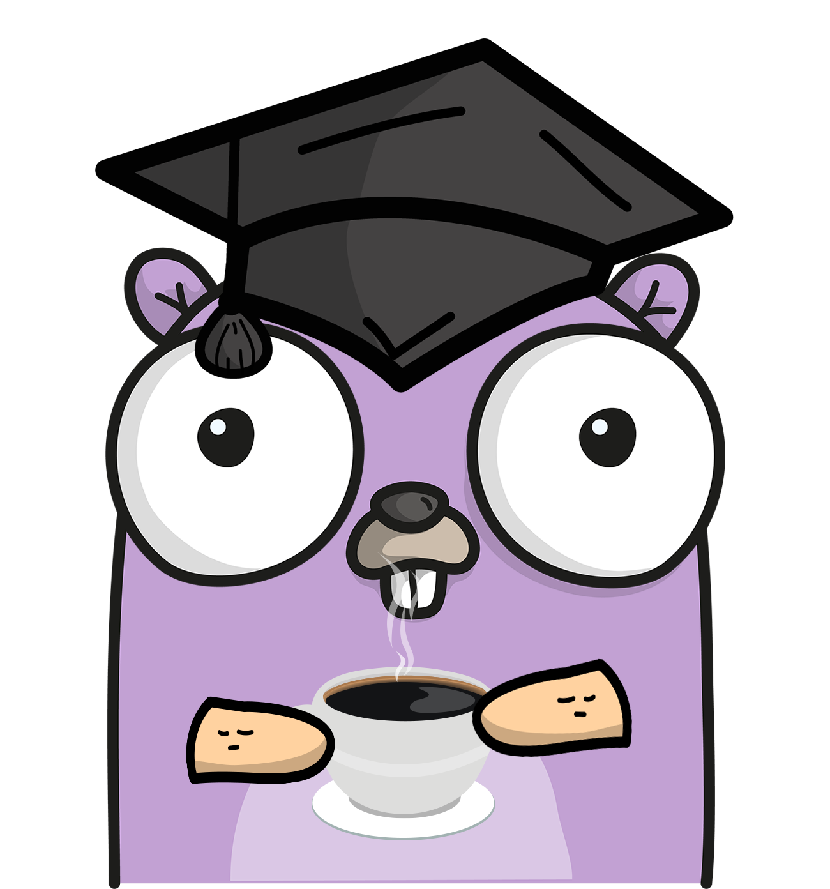
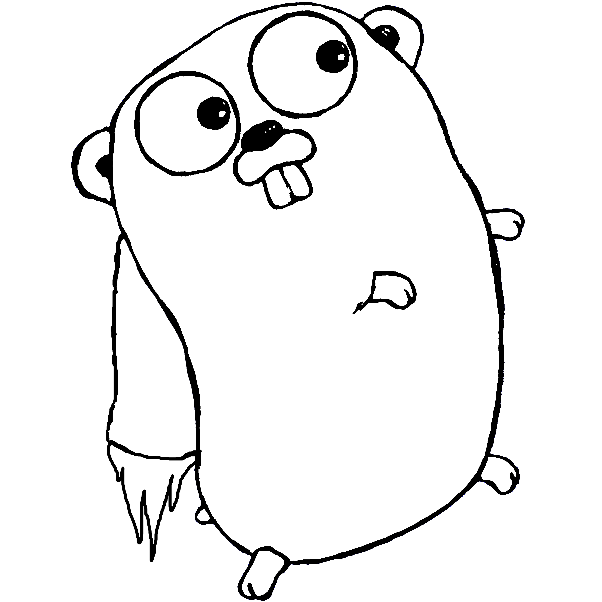

Getting Started With Go
Michael Kacher and James Culbertson, Houston Golang Meetup, February 23, 2017
Getting Started With Go
James Culbertson
Michael Kacher
Houston Golang Meetup

Getting Started With Go
What is Go
Why and When to Go?
Setup and Build
Tour of Go
Package Management
IDE and Debugging
Essential Resources
Further Practices
Q and A
What is Go?
A programming language
Go is an open source programming language that makes it easy to build simple, reliable, and efficient software.
github.com/golang/go
It's fair to say that Go was designed for the cloud before clouds ran software.
Russ Cox
What is Go?
Go personality

Go mascot and community member representation (A "Gopher").
Gopher image by Renee French, licensed under Creative Commons 3.0 Attributions license.
What is Go?
A programming philosophy
In Go, we have explicitly tried not to solve everything. No idea went into Go until it had been simplified to its essence and then had clear benefits that justified the complexity being added.
Russ Cox YouTube Presentation
What is Go?
A programming philosophy
Design the architecture, name the components, document the details.
Documentation is for users.
Clear is better than clever.
Reflection is never clear.
A little copying is better than a little dependency.
The bigger the interface, the weaker the abstraction.
More proverbs from Rob Pike
What is Go?
A programming philosophy
If C++ and Java are about type hierarchies and the taxonomy of types, Go is about composition.
Rob Pike's Blog
What is Go?
A community
What is Go?
A community - expected values
Be friendly and welcoming
Be patient
Be thoughtful
Be respectful
Be charitable
Avoid destructive behavior
Code of Conduct
What is Go?
Features
Imperative
Statically Typed
Strong Standard Library
Garbage Collected
Built for Scale
Single Executable
Cross Platform
Compiles quickly
Simple to Read/Maintain
Strong Concurrency Support
Fast to Learn
Built-in testing and profiling
Low use of compute resources
Why and When to Go?
Application Domains
High scale server applications
Command line applications
Web API and web applications
Concurrent applications
Devops (easy deployment and native orchestration tools)
Less Optimum Domains
Native UI Applications
Native Mobil Applications
Setup and Build
GOPATH - Setting and how it works
Including $GOPATH/bin in your PATH
Basic build options (go build, go install)
Setup and Build
Go command options
oracle
trace
test
cover
race
oracle
Setup and Build
Other Commands
godoc
gofmt
goimports
vet
Highlights
Types
Functions
Method receivers, composite literals
Embedding
Multiple return types
Error handling
Interfaces
Package Management
Go Get
Vendoring
Tools -> GoDeps, Glide
Forking a Package for Contributions
Go Get
Tool for installing/updating packages to Go path
Example:
go get github.com/knq/xo
Pulls the code to $GOPATH/src/github.com/knq/xo and builds the package
Also pulls and builds dependent packages
Doesn't provide any means to track or pin versions
Vendoring
Vendoring is the placement of packages in a vendor directory within the $GOPATH
Vendored packages have precedence over packages obtained via go get
Allows for reproducible builds and control over package versions
Tools are available to help with vendoring
"Official" tool dep is in development: github.com/golang/dep
Vendoring Tools To Use Now
Popular vendoring tools (until dep is officially released):
Glide (github.com/Masterminds/glide)Godep (github.com/tools/godep)Govendor (github.com/kardianos/govendor)Others...
Vendoring Guidelines
Library Development
Avoid unnecessary external dependencies
Take care with vendoring
Some developers advise to avoid vendoring within libraries
Application Development
Vendor all external dependencies
Commit vendored folder to source control (reproducible builds)
Forking a Package For Contributions
Internal package names in import referencing wrong location
If you forkedgithub.com/your-username/xo , the original references will be:
import (github.com/knq/xo /internal"github.com/knq/xo /models"
Renaming all of them to github.com/your-username/xo is not practical and error prone
Forking a Package For Contributions
Technique
Go get the package as normal
Fork package as usual on Github
At "go get" code location set fork as remote
git remote add fork https://github.com/your-username /repo.git
Push commits back to fork
Issue pull request from fork
Editors
Vim with vim-go plugin
Emacs with go-mode plugin
Sublime with go-sublime plugin
Atom with go-plus plugin
VS Code with lukehoban.go plugin
IDE's
LiteIDE (github.com/visualfc/liteide)
Gogland - JetBrains IDE (in beta)
Eclipse with goclipse plugin
Recommendation
VS Code
Free and Open Source
Multi-platform
Performant Compared to Atom
Frequent Upgrades
Good integration with Delve Debugger
Highly configurable with Go tools
Nice integration with Git/Github
Debugging Practices
Printing state
go run -race (to detect race conditions)
ctrl+Backslash (Linux command line to dump state)
Interactive debugging with breakpoints (Delve)
Essential Resources
How to Write Go Code (golang.org/doc/code.html)
Awesome Go (github.com/avelino/awesome-go)
"The Go Programming Language" - Book by Donavan and Kernighan
Go By Example (gobyexample.com)
Further Practice
Exercism Exercises (http://exercism.io/languages/go/exercises)
Contribute to Go open source software
Write your own Go open source apps/libraries
Contribute to existing Go open source
Read examples of Go code
Standard Library (golang.org/src/net)
Open Source (github.com/gorilla/mux)